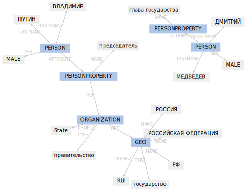

Naeval — количественное сравнение систем для русскоязычного NLP
Проект Natasha решает базовые задачи обработки естественного русского языка: сегментация на токены и предложения, анализ морфологии и синтаксиса, NER. Natasha — не научный проект, у нас нет цели побить SOTA. Важно измерить качество на публичных бенчмарках, постараться занять высокое место, не проиграв в производительности.
Naeval — часть проекта Natasha, набор скриптов для оценки качества и скорости работы открытых инструментов для обработки естественного русского языка:
| Задача | Датасеты | Решения |
|---|---|---|
| Токенизация | SynTagRus, OpenCorpora, GICRYA, RNC | SpaCy, NLTK, MyStem, Moses, SegTok, SpaCy Russian Tokenizer, RuTokenizer, Razdel |
| Сегментация предложений | SynTagRus, OpenCorpora, GICRYA, RNC | SegTok, Moses, NLTK, RuSentTokenizer, Razdel |
| Эмбединги | SimLex965, HJ, LRWC, RT, AE, AE2 | RusVectores, Navec |
| Анализ морфологии | GramRuEval2020 (SynTagRus, GSD, Lenta.ru, Taiga) | DeepPavlov Morph, DeepPavlov BERT Morph, RuPosTagger, RNNMorph, Maru, UDPipe, SpaCy, Stanza, Slovnet Morph, Slovnet BERT Morph |
| Анализ синтаксиса | GramRuEval2020 (SynTagRus, GSD, Lenta.ru, Taiga) | DeepPavlov BERT Syntax, UDPipe, SpaCy, Stanza, Slovnet Syntax, Slovnet BERT Syntax |
| NER | factRuEval-2016, Collection5, Gareev, BSNLP-2019, WiNER | DeepPavlov NER, DeepPavlov BERT NER, DeepPavlov Slavic BERT NER, PullEnti, SpaCy, Stanza, Texterra, Tomita, MITIE, Slovnet NER, Slovnet BERT NER |
Сетка датасетов и решений из репозитория Naeval. Подробнее в разделах «Evaluation» репозиториев Razdel, Navec, Slovnet.
Дальше подробнее рассмотрим задачу NER.Датасеты
Для русскоязычного NER существует 5 публичных бенчмарков: factRuEval-2016, Collection5, Gareev, BSNLP-2019, WiNER. Ссылки на источники собраны в реестре Corus. Все датасеты состоят из новостных статей, в текстах отмечены подстроки с именами, названиями организаций и топонимов. Что может быть проще?
- У всех датасетов разный формат разметки
-
Collection5 использует Standoff-формат утилиты Brat, Gareev и WiNER — разные диалекты BIO-разметки, у BSNLP-2019 свой формат, у factRuEval-2016 тоже своя нетривиальная спецификация. Naeval приводит все источники к общему формату. Разметка состоит из спанов. Спан — тройка: тип сущности, начало и конец подстроки.
- Типы сущностей
-
factRuEval-2016 и Collection5 отдельно помечают полутопонимы-полуорганизации: «Кремль», «ЕС», «СССР». BSNLP-2019 и WiNER выделяют названия событий: «Чемпионат России», «Брексит». Naeval адаптирует и удаляет часть меток, оставляет эталонные метки PER, LOC, ORG: имена людей, названия топонимов и организаций.
- Вложенные спаны
-
В factRuEval-2016 спаны пересекаются. Naeval упрощает разметку:
Было Теперь, как утверждают в Х5 Retail Group, куда входят org_name─────── Org──────────── сети магазинов "Пятерочка", "Перекресток" и "Карусель", org_descr───── org_name─ org_name─── org_name Org────────────────────── org_descr───── Org───────────────────────────────────── org_descr───── Org────────────────────────────────────────────────── о повышении цен сообщили два поставщика рыбы и морепродуктов и компания, поставляющая овощи и фрукты. Стало Теперь, как утверждают в Х5 Retail Group, куда входят ORG──────────── сети магазинов "Пятерочка", "Перекресток" и "Карусель", ORG────── ORG──────── ORG───── о повышении цен сообщили два поставщика рыбы и морепродуктов и компания, поставляющая овощи и фрукты.
Модели
Naeval сравнивает 12 открытых решений задачи NER для русского языка. Все инструменты завёрнуты в Docker-контейнеры с веб-интерфейсом:
$ docker run -p 8080:8080 natasha/tomita-algfio
2020-07-02 11:09:19 BIN: 'tomita-linux64', CONFIG: 'algfio'
2020-07-02 11:09:19 Listening http://0.0.0.0:8080
$ curl -X POST http://localhost:8080 --data \
'Глава государства Дмитрий Медведев и Председатель \
Правительства РФ Владимир Путин выразили глубочайшие \
соболезнования семье актрисы'
<document url="" di="5" bi="-1" date="2020-07-02">
<facts>
<Person pos="18" len="16" sn="0" fw="2" lw="3">
<Name_Surname val="МЕДВЕДЕВ" />
<Name_FirstName val="ДМИТРИЙ" />
<Name_SurnameIsDictionary val="1" />
</Person>
<Person pos="67" len="14" sn="0" fw="8" lw="9">
<Name_Surname val="ПУТИН" />
<Name_FirstName val="ВЛАДИМИР" />
<Name_SurnameIsDictionary val="1" />
</Person>
</facts>
</document>
Некоторые решения так тяжело запустить и настроить, что мало людей ими пользуется. PullEnti — сложная система, построенная на правилах, заняла первой место на конкурсе factRuEval в 2016 году. Инструмент распространяется как SDK для C#. Работа над Naeval вылилась в отдельный проект на Github с набором обёрток для PullEnti: PullentiServer — веб-сервер на С#, pullenti-client — Python-клиент для PullentiServer:
$ docker run -p 8080:8080 pullenti/pullenti-server
2020-07-02 11:42:02 [INFO] Init Pullenti v3.21 ...
2020-07-02 11:42:02 [INFO] Load lang: ru, en
2020-07-02 11:42:03 [INFO] Load analyzer: geo, org, person
2020-07-02 11:42:05 [INFO] Listen prefix: http://*:8080/
>>> from pullenti_client import Client
>>> client = Client('localhost', 8080)
>>> text = 'Глава государства Дмитрий Медведев и ' \
... 'Председатель Правительства РФ Владимир Путин ' \
... 'выразили глубочайшие соболезнования семье актрисы'
>>> result = client(text)
>>> result.graph

Формат разметки у всех инструментов немного отличается. Naeval загружает результаты, адаптирует типы сущностей, линеаризует спаны:
Было (PullEnti)
Напомним, парламент Южной Осетии на состоявшемся 19 декабря
ORGANIZATION──────────
GEO─────────
заседании одобрил представление президента Республики
PERSON────────────────
PERSONPROPERTY───────
Леонида Тибилова об отставке председателя Верховного суда
──────────────── PERSON───────────────────────
PERSONPROPERTY──────────────
ORGANIZATION───
Ацамаза Биченова.
────────────────
Стало
Напомним, парламент Южной Осетии на состоявшемся 19 декабря
ORG────── LOC─────────
заседании одобрил представление президента Республики
Леонида Тибилова об отставке председателя Верховного суда
PER───────────── ORG────────────
Ацамаза Биченова.
PER─────────────
Сравнение
Для каждой пары «система, датасет» Naeval вычисляет F1-меру по токенам, публикует таблицу с оценками качества.
Natasha — не научный проект, для нас важна практичность решения. Naeval измеряет время старта, скорость работы, размер модели и потребление RAM. Таблица с результатами в репозитории.
Мы подготовили датасеты, завернули системы в Docker-контейнеры и посчитали метрики для 5 других задач русскоязычного NLP, результаты в репозитории Naeval: токенизация, сегментация на предложения, эмбединги, анализ морфологии и синтаксиса.
 natural_language_processing — чат пользователей, разработчиков проекта.
natural_language_processing — чат пользователей, разработчиков проекта.

 kuk
kuk
Лаборатория разрабатывает сервисы и коробочные продукты с использованием технологии Natasha, оказывает услуги анализа данных для российских компаний.